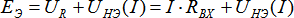
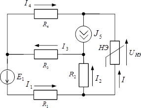

1. Ðàñ÷¸ò íåëèíåéíûõ öåïåé ìåòîäîì ýêâèâàëåíòíîãî èñòî÷íèêà
Äëÿ ðàñ÷åòà ýëåêòðè÷åñêèõ öåïåé ëþáîé ñëîæíîñòè, ñîäåðæàùèõ òîëüêî îäèí íåëèíåéíûé ýëåìåíò, ìîæåò áûòü ïðèìåíåí ìåòîä ýêâèâàëåíòíîãî ãåíåðàòîðà.
Îòíîñèòåëüíî íåëèíåéíîãî ýëåìåíòà âñþ îñòàëüíóþ ÷àñòü ñõåìû ìîæíî çàìåíèòü ýêâèâàëåíòíûì ãåíåðàòîðîì íàïðÿæåíèÿ, ÝÄÑ êîòîðîãî ðàâíà íàïðÿæåíèþ íà ðàçîìêíóòûõ çàæèìàõ âåòâè ñ íåëèíåéíûì ýëåìåíòîì, à åãî âíóòðåííåå ñîïðîòèâëåíèå ðàâíî âõîäíîìó ñîïðîòèâëåíèþ ïàññèâíîãî ëèíåéíîãî äâóõïîëþñíèêà îòíîñèòåëüíî ðàçîìêíóòîé âåòâè ñ íåëèíåéíûì ýëåìåíòîì.
Òàê êàê îïðåäåëåíèå íàïðÿæåíèÿ õîëîñòîãî õîäà è âõîäíîãî ñîïðîòèâëåíèÿ ïðîâîäèòñÿ ïðè èñêëþ÷åííîì èç ðàññìîòðåíèÿ íåëèíåéíîì ýëåìåíòå, òî ýòè ýòàïû ðàñ÷åòà ÿâëÿþòñÿ ÷èñòî ëèíåéíûìè çàäà÷àìè. Òàêèì îáðàçîì, ñëîæíàÿ ñõåìà ñâîäèòñÿ ê ñõåìå, ïðåäñòàâëåííîé íà ðèñ. 1.1. Îïðåäåëåíèå æå òîêà â íåëèíåéíîì ýëåìåíòå è íàïðÿæåíèÿ íà íåì ïðîâîäèòñÿ ãðàôè÷åñêèì ìåòîäîì.

Çàïèøåì äëÿ ñõåìû (ðèñ. 1.1) óðàâíåíèå ïî âòîðîìó çàêîíó Êèðõãîôà: .
Òîê â ñõåìå (è íàïðÿæåíèå íà íåëèíåéíîì ýëåìåíòå) ìîæíî îïðåäåëèòü ïî íàéäåííîìó çíà÷åíèþ ÝÄÑ, ïîñòðîèâ ëèíåéíóþ çàâèñèìîñòü  è ñëîæèâ äâå âîëüò-àìïåðíûå õàðàêòåðèñòèêè
è ñëîæèâ äâå âîëüò-àìïåðíûå õàðàêòåðèñòèêè  è
è  (ðèñ. 1.2).
(ðèñ. 1.2).
Îäíàêî ðàñ÷åò ìîæíî óïðîñòèòü, åñëè èñõîäíîå óðàâíåíèå ïðèâåñòè ê âèäó:  .
.
 ýòîì ñëó÷àå ðåøåíèå çàäà÷è, òî åñòü îïðåäåëåíèå òîêà è íàïðÿæåíèÿ íà íåëèíåéíîì ýëåìåíòå, - ýòî òî÷êà ïåðåñå÷åíèÿ âîëüò-àìïåðíîé õàðàêòåðèñòèêè (ÂÀÕ) íåëèíåéíîãî ýëåìåíòà (ÍÝ) è ëèíåéíîé âîëüò-àìïåðíîé õàðàêòåðèñòèêè ýêâèâàëåíòíîãî ãåíåðàòîðà , êîòîðóþ ëåãêî ïîñòðîèòü ïî ëþáûì äâóì òî÷êàì (ðèñ. 1.3).
Ïðèìåð 1.1
Îïðåäåëèòü òîêè è íàïðÿæåíèå íà íåëèíåéíîì ýëåìåíòå â ñõåìå (ðèñ. 1.4), åñëè äàíî:

|  |  |
| Ðèñ. 1.4 | Ðèñ. 1.5 |
Òàê êàê â ñõåìå òîëüêî îäèí íåëèíåéíûé ýëåìåíò, òî ðàñ÷åò ïðîâåäåì ìåòîäîì ýêâèâàëåíòíîãî ãåíåðàòîðà íàïðÿæåíèÿ.
1. Ðàçìûêàåì âåòâü ñ íåëèíåéíûì ýëåìåíòîì (ðèñ. 1.6).  ýòîì ñëó÷àå ïîëó÷åííàÿ ñõåìà ÿâëÿåòñÿ ëèíåéíîé è ê íåé ïðèìåíèìû âñå ìåòîäû ðàñ÷åòà ëèíåéíûõ öåïåé.

Ïîëó÷åííóþ ñõåìó ðàññ÷èòûâàåì ìåòîäîì êîíòóðíûõ òîêîâ, ïîñëå ÷åãî îïðåäåëÿåì íàïðÿæåíèå õîëîñòîãî õîäà .

2. Èñêëþ÷àåì èç ñõåìû (ðèñ. 1.4) âñå èñòî÷íèêè è îïðåäåëÿåì âõîäíîå ñîïðîòèâëåíèå ïîëó÷åííîãî ïàññèâíîãî äâóõïîëþñíèêà ñî ñòîðîíû ðàçîìêíóòûõ çàæèìîâ (ðèñ. 1.7):
3. Ñëåäîâàòåëüíî, èñõîäíàÿ ñõåìà (ðèñ. 1.4) ñâîäèòñÿ ê ñõåìå (ðèñ. 1.8).

Ïîñòðîèâ õàðàêòåðèñòèêó , íàéäåì â òî÷êå åå ïåðåñå÷åíèÿ ñ ÂÀÕ ÍÝ çíà÷åíèÿ òîêà â íåëèíåéíîì ýëåìåíòå è íàïðÿæåíèÿ íà íåì: (ðèñ. 1.5).
Îñòàëüíûå òîêè â ñõåìå îïðåäåëÿåì, ïîëüçóÿñü çàêîíàìè Êèðõãîôà:

Ïðîâåðêà: íàïðèìåð, äëÿ êîíòóðà 1-2-3 ïî çàêîíó Êèðõãîôà.
Ïðèìåð 1.2
Îïðåäåëèòü òîêè è íàïðÿæåíèå íà íåëèíåéíîì ýëåìåíòå â ñõåìå (ðèñ. 1.9), åñëè äàíî:
 |
|
| Ðèñ. 1.9 | Ðèñ. 1.10 |
1. Ðàçìûêàåì âåòâü ñ íåëèíåéíûì ýëåìåíòîì (ðèñ. 1.11) è íàõîäèì íàïðÿæåíèå õîëîñòîãî õîäà, ïðåäâàðèòåëüíî îïðåäåëèâ òîêè â âåòâÿõ.
2. Èñêëþ÷àåì èç ñõåìû (ðèñ. 1.9) âñå èñòî÷íèêè è îïðåäåëÿåì âõîäíîå ñîïðîòèâëåíèå ïîëó÷åííîãî ïàññèâíîãî äâóõïîëþñíèêà ñî ñòîðîíû ðàçîìêíóòûõ çàæèìîâ (ðèñ. 1.12):

3. Ñëåäîâàòåëüíî, èñõîäíàÿ ñõåìà (ðèñ. 1.9) ñâîäèòñÿ ê ñõåìå (ðèñ. 1.1).
Ïîñòðîèâ õàðàêòåðèñòèêó  , íàéäåì â òî÷êå åå ïåðåñå÷åíèÿ ñ ÂÀÕ ÍÝ çíà÷åíèÿ òîêà â íåëèíåéíîì ýëåìåíòå è íàïðÿæåíèÿ íà íåì:
, íàéäåì â òî÷êå åå ïåðåñå÷åíèÿ ñ ÂÀÕ ÍÝ çíà÷åíèÿ òîêà â íåëèíåéíîì ýëåìåíòå è íàïðÿæåíèÿ íà íåì:  (ðèñ. 1.10).
(ðèñ. 1.10).
4. Îñòàëüíûå òîêè â ñõåìå îïðåäåëÿåì, ïîëüçóÿñü çàêîíàìè Êèðõãîôà: